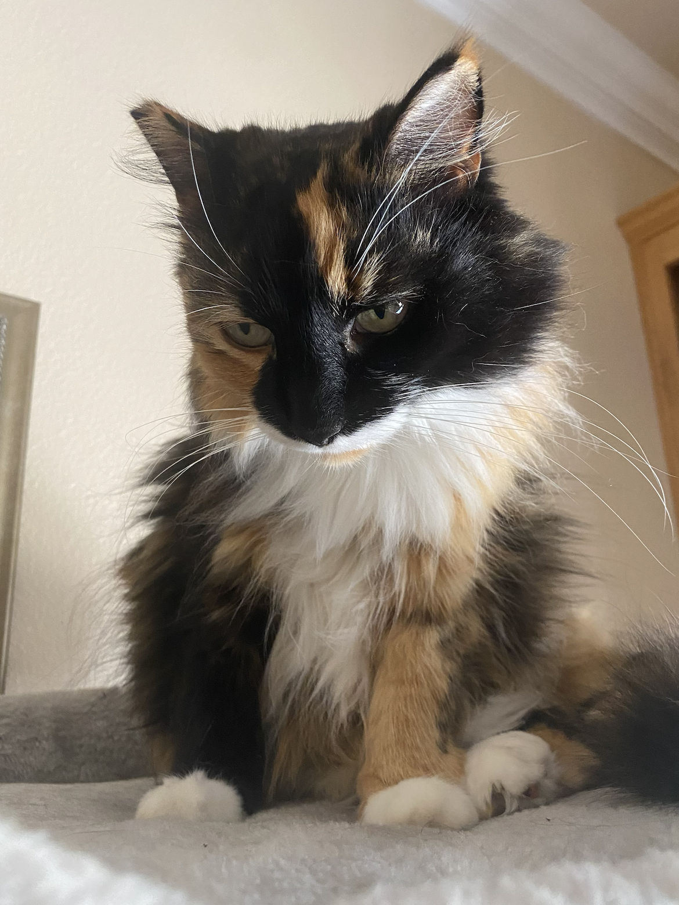
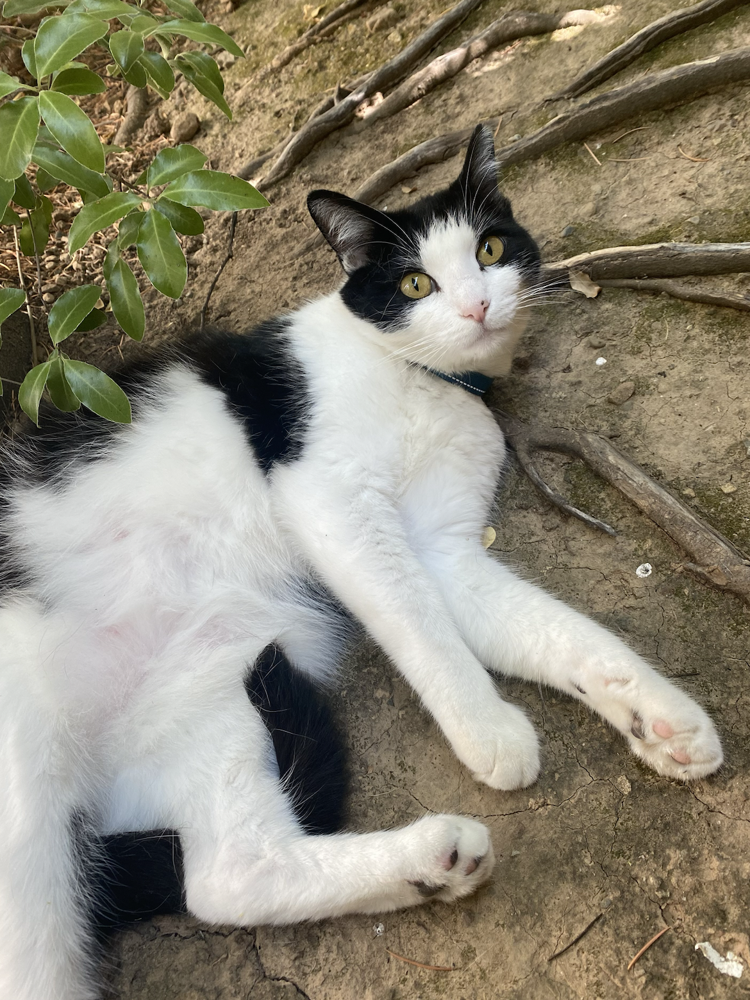

My Parents
My mom's name is Seiko, and she was born on February 10th, making her an Aquarius. She is originally from Japan, and her sister lives in Osaka, Japan with my uncle and grandma. For work, she tutors Japanese virtually to students all over the US. My dad's name is Marcus, and he was born on April 30th, making him a Taurus. He is originally from Germany, and his brother lives in Munich, Germany, while his mom lives in Würzburg, Germany. My dad is the CFO of his own company.
My parents were once international students at SUNY Albany, which is where they met. They continued to live in upstate New York where my older sister was born. They later moved to New Jersey where my twin and I were born. My dad eventually sold his first startup company to Yahoo. As a result, my family and I moved to Saratoga, California when I was 3 years old.
My Sisters
I have two sisters, one who is 8 years older than me, and a twin. My older sister's name is Malina, and she was born on August 3rd, 1996, making her 27 years old. She currently lives in Pasadena as a graduate student attending Art Center. She is pursuing a degree in graphic design. My twin's name is Alissa. She is attending Boston University and her major is undecided.
My Cats
 My family and I have two cats who are both back in California. Pictured on the left is Fare, and on the right is Ricky. Fare is a calico cat and is generally very friendly, although she hates cuddling. Fare got her name because she was a feral cat before we adopted her. As for Ricky's name, we just liked the sound of it. He is a chubby tuxedo cat and is usually scared of people, but loves to cuddle. We got Fare back when I was in middle school on my birthday. We got Ricky a few months after so that Fare would have a friend.